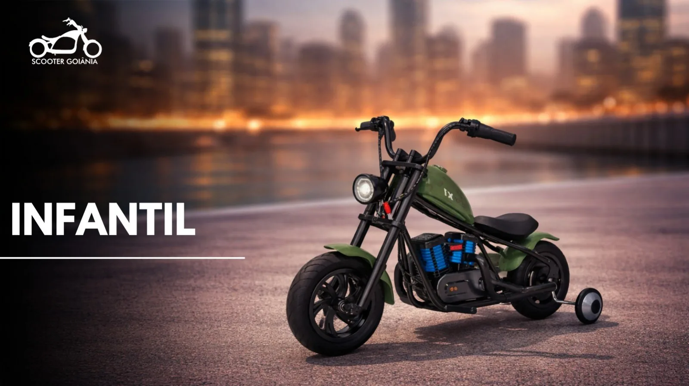

Elétrica e bateria
Falhas elétricas, perda de desempenho e bateria com comportamento diferente do normal.
Diversão elétrica na Scooter Goiânia
Conheça os modelos disponíveis, compare as opções e compre com garantia, oficina especializada e uma equipe para procurar caso precise de assistência depois.
Para presentear ou curtir o tempo livre
Patinete, hoverboard e triciclo drift entregam experiências bem diferentes. Tem quem prefira andar de patinete, quem goste do desafio do hoverboard e quem queira as curvas e movimentos do drift. Na dúvida, vale comparar os modelos antes de escolher.

Patinetes elétricos
Do passeio ao uso no dia a dia, compare os modelos e veja qual faz mais sentido para você.
Preços e disponibilidade conforme o catálogo vigente. Consulte a equipe antes de fechar a compra.
Hoverboard
Uma opção compacta para quem quer uma experiência diferente sobre rodas.
Triciclo drift
Com posição mais baixa e uma proposta própria de condução, o triciclo drift traz outro jeito de aproveitar o tempo livre.
Mini Cross
Um modelo diferente dos patinetes, hoverboards e drift para quem procura outra proposta dentro da linha elétrica.
Oficina especializada
A Scooter Goiânia conta com oficina especializada para atender necessidades de manutenção e suporte dos veículos elétricos comercializados pela loja.
Falhas elétricas, perda de desempenho e bateria com comportamento diferente do normal.
Problemas em pneus ou rodas, necessidade de revisão e dúvidas sobre manutenção.
Avaliação relacionada à garantia e orientação sobre o atendimento.
Comprou na Scooter Goiânia e apareceu algum problema? Fale primeiro com a equipe.
Falar com a oficinaDúvidas antes da compra
Compare o tipo de produto, peso suportado, autonomia, velocidade e as características informadas na ficha.
Sim. Os modelos desta página informam garantia de 90 dias.
Sim. Se estiver entre dois produtos, fale com a equipe e peça ajuda para entender as diferenças.
Você pode procurar a Scooter Goiânia. A loja conta com suporte pós-venda e oficina especializada.
Sim. Mesmo produtos da mesma categoria podem mudar em potência, autonomia, capacidade e configuração.
Já tem um favorito?
Fale com a equipe ou visite uma de nossas unidades.